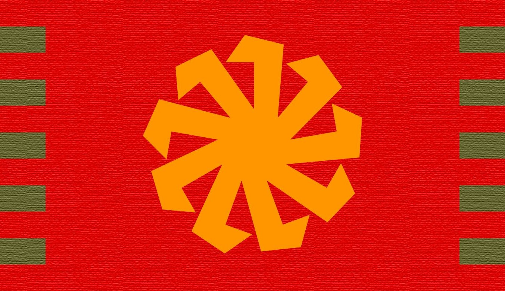

Հայաստանի Թագավորության
Ազգային Սահմանադրություն
(Նախագիծ)
Մենք՝ համայն Հայ ժողովուրդը, նպատակ ունենալով
- Վերականգնել ու ապրել մեր ազգային էությունից բխող Արարչական Ուսմունքով,
- Վերականգնել դարեր առաջ կորցրած մեր ազգային պետությունը,
- Վերականգնել մեր ամբողջական հայրենիքը,
- Վերադարձնել աշխարհասփյուռ բոլոր վտարանդի հայերին,
- Վերականգնել մեր ազգի համատիեզերական Արարչական առաքելությունը,
- Վերականգնել ու պահպանել Երկրագնդի ու նրա կենսոլորտի դրախտային վիճակը,
- Վերականգնել ու պահպանել Արարչական արժեքների վրա հիմնված կայուն խաղաղություն Երկրագնդի բոլոր ազգերի միջև,
հռչակում է Հայաստանը որպես միապետություն, վերականգնելով Արարչական կարգը Արքա միապետի՝ Ազգի գերագույն նահապետի, գլխավորությամբ։
Հայաստանի անունը
Հայաստանի անվանումն է «Հայաստանի Թագավորություն»։ Միջազգային ասպարեզում՝ Kingdom of Armenia։
Հայաստանի Թագավորության ամբողջականությունը
Հայաստանի Թագավորությունը ազատ, անկախ, ինքնիշխան, անբաժանելի ու անկապտելի Համակարգ է։
Հայաստանի Թագավորության արժեհամակարգը
Հայաստանի Թագավորության արժեհամակարգը Արարչական Ուսմունքն է։ Հայաստանի Թագավորությունում բոլոր օրենքներն ու միապետի գործունեությունը բխում են Արարչական Ուսմունքից։
Հայաստանի Թագավորության էությունը
Հայաստանի Թագավորությունը ազգային, սոցիալական միապետություն է։
Հայաստանի Թագավորության իշխանության բնույթը
Հայաստանի Թագավորությունը սահմանադրական, ժառանգական միապետություն է։
Հայաստանի Թագավորության պետական լեզուն
Հայաստանի Թագավորության պետական լեզուն գրական արևելահայերենն է։
Հայաստանի Թագավորության զինանշանը
Հայաստանի Թագավորության զինանշանը իննաթև արևխաչն է։
Երկու տարբերակն էլ հավասարապես ընդունելի են։
Հայաստանի Թագավորության դրոշը
Հայաստանի Թագավորության դրոշը 1.73 × 1 հարաբերության հորիզոնական կարմիր ուղղանկյան վրա նարնջագույն զինանշանն է։

Երկու տարբերակն էլ հավասարապես ընդունելի են։
Հայաստանի Թագավորության նշանաբանը
Հայաստանի Թագավորության նշանաբանն է՝ Եղբայրություն, Հավասարություն, Արդարություն։
Հայաստանի Թագավորության հիմնը
Հայաստանի Թագավորության հիմնը Արամ Խաչատրյանի կողմից երկրորդ հանրապետության համար գրված երաժշտությունն է։
Բառերը՝
Բազում դարեր դաժան ճամփա դու անցար,
Քաջ որդիք քո մաքառեցին քեզ համար,
Որ դառնաս դու մայր հայրենիք հայության։
Աշխատասեր, ճարտարագործ-շինարար,
Ժողովրդիդ սուրբ դաշինքով անսասան՝
Դու ծաղկում ես և կերտում լույս ապագադ։
Մեր դեմ շողաց երջանկաբեր այգաբաց,
Մեր պայքարը կործանումից մեզ փրկեց,
Եվ տվեց մեզ նոր, պայծառ կյանք փառապանծ։
Ու կերտեցին ամրակուռ մի պետություն,
Քո այրերը, խորաթափանց, իմաստուն
Հաղթորեն մեզ դեպ ապագա են տանում։
Հայաստանի Թագավորության միապետի տիտղոսը
Հայաստանի Թագավորության միապետի տիտղոսն է՝ Համայն Հայոց Արքա։ Համայն Հայոց Արքան իր ազգի առաջնորդն է, իր ազգի հավաքական կերպարը, նրա Արարչական էության մարմնացումը։ Համայն Հայոց Արքան, իր ազնվությամբ, առաքինությամբ, իմաստնությամբ, վեհությամբ ու քաջությամբ, իր ազգի գերագույն նահապետն է, իր ազգի բարօրության, պատվի ու արժանապատվության պահապանը։ Համայն Հայոց Արքան իր ազգի անցյալի վկան է, նրա ներկայի ու ապագայի կերտողը։ Արքան է իր ազգի ուսմունքի ու մշակույթի կռողը, կրողը, կիրառողն ու պահապանը։
Համայն Հայոց Արքայի անձեռնմխելիությունը
Համայն Հայոց Արքայի անձը սուրբ է ու անձեռնմխելի։ Համայն Հայոց Արքան չի կարող մեղադրվել կամ պախարակվել։ Համայն Հայոց Արքայի անձի, կամ Արքայական ընտանիքի որևէ անդամի հասցեին վիրավորական արտահայտություն թույլ տալը համարվում է անարգանք ողջ ազգի հասցեին, հետևաբար՝ որակվում է որպես թշնամանք։
Համայն Հայոց Արքային, թագուհուն, կամ արքայական ընտանիքի որևէ անդամին ապակողմնորոշող ու կեղծ տեղեկություն հաղորդելը համարվում է մեծագույն անարգանք, հետևաբար՝ որակվում է որպես թշնամանք։
Արքայի խոստումը
Ստանձնելով երկրի իշխանությունը, Համայն Հայոց Արքան արտասանում է՝ «Խոստանում եմ Արարչական զորությամբ առաջնորդել Հայաստանն ըստ Արարչական Ուսմունքի ու սահմանադրության»։ Այս խոստումը չի կարող կրկնվել երկրորդ անգամ։
Հիմնարար դրույթներ
Հայաստանի Թագավորության Սահմանադրության հիմքը Արարչական Ուսմունքն է։ Արարչական Ուսմունքը կարգավորում է կյանքի բոլոր բնագավառները, հատկապես՝ այն բնագավառները, որոնք կարգավորված չեն համապատասխան օրենսդրությամբ։
Ըստ Արարչական Օրենքի բոլորն ի ծնե հավասար են իրենց իրավունքներով ու արժեքով։ Մարդ իրավունք չունի ստրուկ, ճորտ, ծառա կամ վարձու բանվոր պահել։ Ոչ ոք իրավունք չունի ստրկության, ճորտության, ծառայության հանձնվել կամ վարձու աշխատանքի անցնել որևէ մեկի մոտ։ Ոչ ոք իրավունք չունի շահագործել մյուսի աշխատանքը։ Երբ մարդ վարձատրվում է իր աշխատանքի արդյունքից պակաս, ապա դա շահագործում է։
Ըստ Արարչական Օրենքի բոլորի պարտականությունն է սեփական ազգակցին վերաբերվել եղբայրաբար ու հարգանքով՝ այնպես, ինչպես կցանկանար, որ իրեն վերաբերվեին։
Ըստ Արարչական Օրենքի մարդ ծնվում է անկապտելի իրավունքներով։ Մարդկանց հիմնական ու անկապտելի իրավունքներն են՝ կյանքը, առողջությունը, իրավահավասարությունը, ունեցվածքը, պատիվն ու արժանապատվությունը։ Հայաստանի Թագավորությունում ամեն մարդ իրավունք ունի ամենուր ու ցանկացած միջոցներով պաշտպանել իր ու իր մերձավորների իրավունքները։
Հայաստանի Թագավորությունում մեծագույն հանցանք է բռնություն կամ ոտնձգություն կիրառել սեփական ազգակցի՝ հպատակի, կամ քաղաքացու, իրավունքների՝ կյանքի, առողջության, իրավահավասարության, ունեցվածքի, պատվի ու արժանապատվության վրա։ Ցանկացած այդպիսի ոտնձգություն պատժելի է որձատմամբ։
Ըստ Արարչական Օրենքի բնության մեջ ամեն ինչ պատկանում է բոլորին հավասարապես։ Բոլորը հավասարապես իրավունք ունեն օգտվելու մայր հողի բարիքներից բավարարելու իրենց նյութական ու հոգևոր կարիքները։
Յուրաքանչյուրի պարտականությունն է գթասիրտ ու հարգալից վերաբերմունք ունենալ մայր բնության նկատմամբ, խնամել ու բարեփոխել այն, պահպանել նրա անաղարտությունն ու վերականգնել նրա դրախտային վիճակը։
Հայաստանի Թագավորության հպատակներ կարող են լինել միայն հայազգի անձիք՝ նրանք, ովքեր ծնվել են հայ ծնողներից, դաստիարակվել ազգային արժեհամակարգով ու տիրապետում են հայոց լեզվին։ Բոլոր մյուսները ունեն միայն քաղաքացու կարգավիճակ։
Հայաստանի Թագավորությունը Համակարգի հպատակների կյանքի, առողջության, իրավունքների, ունեցվածքի, պատվի ու արժանապատվության երաշխավորն է։ Հայաստանի Թագավորությունում մարդկանց սոցիալական ապահովությունն առաջնահերթ խնդիր է։
Հայաստանի Թագավորությունը Համակարգի կենսոլորտի անաղարտության պահպանության երաշխավորն է։
Հայաստանի Թագավորության սրբազան պարտականությունն է վերականգնել ու պահպանել ողջ Երկրագնդի ու նրա կենսոլորտի անաղարտությունն ու դրախտային վիճակը։
Հայաստանի Թագավորության սրբազան պարտականությունն է Արարչական արժեքների վրա հիմնված արդարություն ու կայուն խաղաղություն հաստատել Երկրագնդի բոլոր ժողովուրդների միջև։
Հայաստանի Թագավորությունում հպատակներն իրենց կարծիքն ազատորեն արտահայտելու իրավունք ունեն։
Հայաստանի Թագավորության հպատակները զենք կրելու իրավունք ունեն։
Հայաստանի Թագավորության հպատակներն ունեն զինված ապստամբության իրավունք։
Հայաստանի Թագավորությունը բոլոր հպատակներին ու քաղաքացիներին կառավարիչների կամայականություններից պաշտպանելու երաշխավորն է։
Հայաստանի Թագավորությունում կառավարիչների կողմից ցանկացած անօրինական բռնություն հանցագործություն է։ Կառավարիչների կամ օրինապահ մարմինների կողմից որևէ անօրինական բռնության հպատակը, կամ քաղաքացին իրավունք ունի պատասխանել բռնությամբ։
Որևէ պաշտոն պատիվ կամ ճանաչում չէ, այլ միայն աշխատանք ու պարտականություն։
Տնտեսություն
Հայաստանի Թագավորությունում ողջ տնտեսությունն ազգայնացված է ու գտնվում է Համայն Հայոց Արքայի իշխանության տակ՝ հողը, ընդերքն իր ջրային և օգտակար հանածոներով, աղբյուրները, գետերն ու լճերը, անտառները, մարգագետինները, ոռոգման, ջրամատակարարման ու ջրահեռացման ողջ համակարգը, ճանապարհներն ու հաղորդակցության ողջ համակարգը, գանձարանը, էլեկտրաէներգիայի մատակարարման ցանցը, էլեկտրաէներգիայի և բոլոր տեսակի էներգակիրների արտադրության ու ներկրման ձեռնարկությունները, բոլոր տեսակի խոշոր արտադրական, ֆինանսական ու առևտրական ձեռնարկությունները, հասարակական տրանսպորտի համակարգը, գիտության, կրթության և առողջապահության ողջ համակարգը, զինված ուժերը, ազգային անվտանգության համակարգը, օրինապահ համակարգը, դատաիրավական ողջ համակարգը, զանգվածային լրատվության բոլոր միջոցները, առաջին հերթին հեռուստատեսությունը, արվեստի բոլոր բնագավառները, հատկապես թատրոնը, կինոն, կերպարվեստը, ազգային արվեստի, ճարտարապետության ու պատմության հուշարձանները, և այլն, բացի քաղաքացիների անձնական սեփականությունից, կահույքից, փոխադրամիջոցներից, գործիքներից, կացարանից ու անհատական, նաև՝ ընտանեկան ձեռնարկություններից։
Ձեռնարկությունների տեսակները
Հայաստանի Թագավորությունում կան երկու տեսակի ձեռնարկություններ՝ Արքայական, և ընտանեկան։
Արքայական Ձեռնարկությունների Համակարգում մարդիկ կաշխատեն ու կվարձատրվեն ըստ կողմերի միջև նախօրոք, կամավոր փոխհամաձայնությամբ կազմված ու ստորագրված պայմանագրի։ Արքայական համակարգի ձեռնարկությունների ողջ եկամուտը կմտնի պետական գանձարան։
Ընտանեկան ձեռնարկությունների համակարգում արգելվում է վարձու աշխատանքի օգտագործումը։ Հայաստանում ցանկացած անհատ կամ ընտանիք իրավունք ունի ցանկացած տնտեսական գործունեություն ծավալել։ Ընտանեկան ձեռնարկություններում կարող են աշխատել միայն միևնույն ընտանիքի կամ գերդաստանի անդամները։ Ընտանիքի, կամ գերդաստանի անդամներից բացի, արգելվում է վարձու աշխատանքի վերցնել մեկ ուրիշին։ Միայն ծայրահեղ անհրաժեշտության դեպքում է կարելի աշխատանքի ներգրավել մեկ ուրիշին, պայմանով, որ նա վարձատրվի ընտանիքի կամ գերդաստանի անդամի հետ համահավասար։ Ընտանեկան ձեռնարկությունները Արքունական գանձարան կմուծեն իրենց զուտ եկամտի 10%-ը։
Բոլոր մարդիկ ծնվում են հավասար արժեքով ու արժանապատվությամբ։ Հետևաբար, ոչ ոք իրավունք չունի շահագործել մյուսին ու նրա աշխատանքը։ Երբ, հարկադրված, մարդ մատնում է սեփական անձը ծառայության կամ վարձու աշխատանքի, վարձատրվելով սեփական աշխատանքի արդյունքից պակաս, ապա դա շահագործում է։ Մարդն ազատորեն իրավունք ունի տնօրինել իր մտավոր և ֆիզիկական աշխատանքի արդյունքները։ Ոչ ոք իրավունք չունի ստրուկ, ճորտ, ծառա կամ վարձու բանվոր պահել։ Ոչ ոք իրավունք չունի ստրկության, ճորտության, ծառայության հանձնվել կամ վարձու աշխատանքի անցնել մեկ ուրիշի մոտ։
Հայաստանի Թագավորությունում բոլոր տնտեսական, կամ այլ գործառույթները կատարվում են իրավահավասար ու հավասարազոր անհատների, կամ ձեռնարկությունների միջև ըստ նախօրոք, կամավոր փոխհամաձայնությամբ կազմված ու ստորագրված պայմանագրի։
Ոչ մի օտարերկրյա քաղաքացի կամ պետություն իրավունք չունի որևէ սեփականություն ունենալ Հայաստանի Թագավորությունում։
Ոչ մի օտարերկրյա քաղաքացի իրավունք չունի աշխատել Հայաստանի Թագավորությունում։
Հողօգտագործում
Հայաստանի Թագավորությունում ամեն անհատ իրավունք ունի ազատորեն՝ անվճար, օգտվել մայր հողի տված բարիքներից իր և իր ընտանիքի կարիքները հոգալու համար։ Ոչ ավել, բայց նաև ոչ պակաս։
Հայաստանի Թագավորությունում հողօգտագործումն ու ջուրն անվճար է (այս ոլորտը կկարգավորվի առանձին օրենսդրությամբ ու կիրագործվի Հողօգտագործման Նախարարության կողմից)։
Համայն Հայոց Արքայի իշխանությունը
Համայն Հայոց Արքայի ձեռքում է ողջ օրենսդիր ու գործադիր իշխանությունը, դատաիրավական ողջ համակարգը։
Համայն Հայոց Արքան իրականացնում է համակարգի կառավարումը համապատասխան նախարարությունների միջոցով։
Համայն Հայոց Արքան պահպանում է օրինականությունը համակարգի ներսում Արքայական Ոստիկանության, Արքայական դատարանների ու Արդարադատության նախարարության միջոցով։
Համայն Հայոց Արքան է ազգի գերագույն դատավորը։
Համայն Հայոց Արքան է իր հպատակների իրավունքների ու բարօրության պաշտպանը։
Համայն Հայոց Արքան է որոշում իր երկրի բոլոր ոլորտները կարգավորող օրենսդրությունը։
Համայն Հայոց Արքան է հաստատում միջազգային պայմանագրերը։
Համայն Հայոց Արքան է հատում դրամը, որոշում դրամական միավորի անունը, արժեքը, տեսքն ու քանակը շրջանառության մեջ։
Համայն Հայոց Արքան է որոշում իր հատած դրամի նկատմամբ այլ երկրների դրամների համարժեքները։
Համայն Հայոց Արքան է հատում արժեթղթեր։ Արքայից բացի ոչ ոք իրավունք չունի արժեթղթեր հատել։
Համայն Հայոց Արքան է որոշում իր հատած դրամի կեղծարարների պատժաչափը։
Համայն Հայոց Արքան է որոշում հարկերի, վարկերի, տեսակն ու չափը (Հայաստանում արգելվում է տոկոսով վարկեր տալը)։
Համայն Հայոց Արքան է որոշում օտար պետություններից վերցվելիք պարտքի չափը (միայն ծայրահեղ իրավիճակներում կարելի է օտար երկրներից վարկ վերցնել)։
Համայն Հայոց Արքան է որոշում կշռի, երկարության, ժամանակի ու երկրում կիրառվող բոլոր չափման միավորները։
Համայն Հայոց Արքան է կառավարում օտարերկրյա պետությունների հետ առևտուրը, Առևտրի Նախարարության միջոցով։
Համայն Հայոց Արքան է որոշում տարանցիկ փոխադրումների ու երկիր ներմուծվող ապրանքների տեսակը, քանակն ու մաքսերի չափերը։
Համայն Հայոց Արքան է հաստատում հայազգի անձանց հպատակության դիմումները։
Համայն Հայոց Արքան է տնօրինում ողջ փոստային ծառայությունը, զանգվածային լրատվության միջոցները, հեռախոսային ու ինտերնետային ցանցը Կապի Նախարարության միջոցով։
Համայն Հայոց Արքան է հովանավորում ու զարգացման մղում գիտությունն ու ազգային արվեստը։ Գիտությունն ու ազգային արվեստը ֆինանսավորվում են Արքունական Գանձարանից։
Համայն Հայոց Արքան է իր հպատակների գիտական, տեխնոլոգիական, արվեստի գործերի ու արհեստի նմուշների հեղինակային իրավունքների պաշտպանը, Հեղինակային Իրավունքների Պաշտպանության Նախարարության միջոցով։
Իշխանության ժառանգելիությունը
Համայն Հայոց Արքայի իշխանությունը կարող է փոխանցվել միայն Արքայի օրինական ամուսնությունից սերված զավակներին։ Իսկ զավակների բացակայության դեպքում՝ Համայն Հայոց Արքայի ընտրյալին։
Համայն Հայոց Արքայի դեռ չծնված զավակները համարվում են թագաժառանգներ։ Թագաժառանգների ծնունդը, անունն ու ժամանակը հայտարարվում է Համակարգով մեկ ու գրանցվում Արքայական Շառավղի Ժառանգական Մատյանում։
Համայն Հայոց Արքայի մահից անմիջապես հետո, կամ Արքայի անգիտակից վիճակում, Արքայի ամենաավագ արու զավակն անմիջապես համարվում է Համայն Հայոց Արքան, անկախ նրանից, թե երբ կկայանա թագադրության արարողությունը։
Համայն Հայոց Արքայի մահից անմիջապես հետո, կամ Արքայի անգիտակից վիճակում, և արու զավակի բացակայության դեպքում Արքայի դեռ չծնված արու սաղմն անմիջապես համարվում է Համայն Հայոց Արքան, անկախ նրանից, թե երբ կծնվի նա, կամ՝ երբ կստանձնի իշխանությունը։
Համայն Հայոց Արքայի մահից անմիջապես հետո, կամ Արքայի անգիտակից վիճակում, և արու զավակի, արու սաղմի բացակայության դեպքում, ողջ Արքայական իշխանությունն անմիջապես անցնում է թագուհուն, բայց՝ ժամանակավորապես, մինչև չընտրվի նոր Համայն Հայոց Արքան։ Արքայի մահից հետո թագուհին չի կարող նորից ամուսնանալ։
Համայն Հայոց Արքայի մահից անմիջապես հետո կամ Արքայի անգիտակից վիճակում, և արու զավակի, արու սաղմի կամ թագուհու բացակայության դեպքում, ողջ Արքայական իշխանությունն անմիջապես անցնում է ավագ արքայադստերը, բայց՝ ժամանակավորապես, մինչև չընտրվի նոր Համայն Հայոց Արքան։ Արքայադստեր ամուսինը չի կարող համարվել Համայն Հայոց Արքա առանց համազգային հանրաքվեյի։
Համայն Հայոց Արքայի մահից անմիջապես հետո կամ Արքայի անգիտակից վիճակում և արու զավակի, արու սաղմի, թագուհու կամ արքայադստեր բացակայության դեպքում, ողջ Արքայական իշխանությունն անմիջապես անցնում է Արքայի կողմից իր կենդանության ու ողջամտության օրոք ընտրված իրավահաջորդին։
Համայն Հայոց Արքայի մահից անմիջապես հետո կամ Արքայի անգիտակից վիճակում, և արու զավակի, արու սաղմի, թագուհու, արքայադստեր կամ Արքայի կողմից ընտրյալ իրավահաջորդի բացակայության դեպքում, երկրի կառավարումը (ոչ իշխանությունը) անմիջապես, բայց ժամանակավորապես անցնում է Արքայական Խորհրդին, մինչև չընտրվի նոր Համայն Հայոց Արքան համազգային հանրաքվեով։
Նոր Արքայի ընտրությունը պետք է տեղի ունենա համազգային հանրաքվեով Համայն Հայոց Արքայի մահից հետո մեկ տարվա ընթացքում։
Նոր Արքա կարող է առաջադրել ու ընտրել միայն ազգի գյուղապետերից, քաղաքապետերից, գավառապետերից, մարզպաններից, Արքայական Խորհրդից, նախարարներից և ազգային ուսմունքի կենտրոնների ուսուցիչներից ու շրջանավարտներից կազմված Ժողովը։ Ժողովի աշխատանքներին կարող են մասնակցել միայն 35 տարեկանից բարձր անձիք։ Նոր Համայն Հայոց Արքայի թեկնածու կարող է ընտրվել միայն 50 տարեկանից բարձր անձը Ժողովի մասնակիցների ձայների 75%-ից ավել ճնշող մեծամասնությամբ, բաց քվեարկությամբ։
Համայն Հայոց Արքան իր տարիքի պատճառով կարող է դադարեցնել ու գահի հաջորդ ժառանգորդին, կամ իր ընտրյալ իրավահաջորդին փոխանցել ողջ իշխանությունը։
Եթե, Արքան ծանր հիվանդության պատճառով չի կարող մասնակցել Արքայական Խորհրդի նիստերին, նրա տեղը ժամանակավորապես զբաղեցնում է Արքայի առաջին օրինական իրավահաջորդը, եթե 21 տարեկանից բարձր է։ Արքայական Խորհրդի որոշումը ներկայացվում է Համայն Հայոց Արքային։ Վերջնական որոշումը Արքայինն է։
Համայն Հայոց Արքայի, մինչև 21 տարեկան դառնալը, համակարգի կառավարումը (ոչ իշխանությունը) ժամանակավորապես ստանձնում է Արքայական Խորհուրդը։
Համայն Հայոց Արքայի, մինչև 21 տարեկան դառնալը, նրա կրթության ու խնամակալի հարցը լուծում է Արքայական Խորհուրդը, եթե և՛ Արքան, և թագուհին չկան ու չեն թողել որևէ գրավոր ցուցում խնամակալի անձի վերաբերյալ։
Համակարգի կառավարումը
Թագաժառանգը, 21 տարեկան դառնալուց անմիջապես հետո, Համայն Հայոց Արքայի հետ միասին հայտարարում է իր հասունության մասին։
Համայն Հայոց Արքայի պարտականությունները ստանձնելուց առաջ Արքայի օրինական իրավահաջորդը արտասանում է. «Խոստանում եմ Արարչական զորությամբ առաջնորդել Հայաստանն ըստ Արարչական Ուսմունքի ու սահմանադրության»։
Թագադրման կարգը ներկայացված է Թագադրման մասին առանձին Արքայական փաստաթղթով։ (Արքայական Խորհրդի անդամների կողմից, ծնկաչոք, թագաժառանգին կամ նորընտիր Արքային է մատուցվում թագը, և Արքայական սուրը Արքայական վահանի վրա։ Թագաժառանգը կամ նորընտիր Արքան ինքն է իր գլխին դնում թագն ու կապում մատուցված սպառազենը։ Այս ամենին ծնկաչոք հետևում են բոլոր ներկաներն ու ողջ ժողովուրդը։ Արքան արտասանում է իր խոստումը։ Արքայի խոստումը լսելուց հետո, բոլորը ոտքի են կանգնում, աջ ձեռքի բռունցքը արևահյուսակին սեղմած, որպես հպատակության նշան)։
Հայաստանի Թագավորությունում չկա ազգային ժողով։
Հայաստանի Թագավորությունում միայն Համայն Հայոց Արքան ունի օրենսդրական իրավունք։
Համայն Հայոց Արքան որոշումներ է ընդունում Արքայական Խորհրդի խորհրդատվական աջակցությամբ։
Արքայական Խորհրդի Անդամներն են Արքայի երկու խորհրդականները, Վարչապետը, և Խորհրդի մյուս ինն անդամները։
Հայաստանի Թագավորությունում Համայն Հայոց Արքան իր իշխանությունն իրականացնում է իրեն ենթակա կառույցների՝ Արքայական Խորհրդի, նախարարությունների, օրինապահ ու դատաիրավական ողջ համակարգի միջոցով։
Արքան ընտրում և նշանակում է ոչ միայն Արքայական Խորհրդի անդամներին, ու նախարարներին, դեսպաններին, հյուպատոսներին, այլ նաև իր Անձնական Քարտուղարության Քարտուղարին, մարզպաններին, գավառապետերին ու մեծ քաղաքների քաղաքապետերին։ Գյուղապետերը, փոքր քաղաքների քաղաքապետերն ու մեծ քաղաքների թաղապետերը կընտրվեն համապատասխան համայնքների կողմից։
Արքայական Խորհրդի խորհրդատվական աջակցությամբ ու ներկայացմամբ, Արքան ընտրում և նշանակում է քաղաքացիական ու զինվորական ավագ պաշտոնյաներին։ Արքան զինվորական ու Ազգային Անվտանգության ավագ պաշտոնյաների ընտրությունն ու նշանակումը կարող է կատարել առանց Արքայական Խորհրդի մասնակցության ու իմացության։
Արքայազները, արքայադուստրերն ու թագուհին իրավունք չունեն որևէ պաշտոն զբաղեցնել։
Արքայական Խորհրդի անդամները, նախարարները, դեսպաններն ու հյուպատոսները, Արքայի Թիկնապահ Գնդի Հրամանատարը, Անվտանգության Ծառայության Ընդհանուր Հրամանատարը, Արքայական Զինված Ուժերի ընդհանուր հրամանատարն ու Արքայական Զինված Ուժերի ու Անվտանգության Ծառայության բարձրաստիճան սպաները նախքան իրենց պաշտոններում նշանակվելը հանդիսավոր կերպով երդվում են հնազանդ ու հավատարիմ լինել Արարչական ուսմունքին, Համայն Հայոց Արքային ու Հայաստանի Թագավորության Սահմանադրությանը (Արքայի կողմից կազմված երդման տեքստը կներկայացվի առանձին փաստաթղթով)։
Համայն Հայոց Արքան կարող է Արքայական Խորհրդի անդամների համար օգնական քարտուղարներ նշանակել։ Արքայական Խորհրդի աշխատանքներից դուրս, իրենց համապատասխան պարտականություններով օժտված Քարտուղարները օժանդակում, ներկայացնում ու գործում են Խորհրդի այն անդամին, ու նրա անունից, որին կցված են։
Միևնույն ժամանակահատվածում Արքայական Խորհրդի անդամներ չեն կարող լինել ամուսիններ, եղբայրներ, ծնողներ ու երեխաներ, բարեկամներ ու հարազատներ։
Համայն Հայոց Արքան իր հայեցողությամբ հանձնարարություններ է բաշխում Արքայական Խորհրդի անդամների միջև։
Համայն Հայոց Արքան կարող է ցանկացած ժամանակ իր հայեցողությամբ փոփոխել Արքայական Խորհրդի կազմը՝ առանց դատարանի որոշման, հեռացնել Արքայական Խորհրդի անդամներին ու նրանց Քարտուղարներին, դիվանագիտական ու հյուպատոսական պաշտոնյաներին, քաղաքացիական կամ զինվորական ավագ պաշտոնյաներին, կայազորերի ու նավատորմի հրամանատարներին։ Հեռացման դեպքում բոլոր պաշտոնյաները կստանան իրենց հասանելիք կենսաթոշակի կեսը։
Մյուս բոլոր պաշտոնյաները պաշտոնից հեռացվելու դեպքում կենթարկվեն պատասխանատվության ու կկանգնեն դատարանի առջև։
Առավելագույն տարիքի հասնելուց հետո բոլոր ավագ պաշտոնյաներն անցնում են կենսաթոշակի։
Արքայական Խորհուրդը Համայն Հայոց Արքայի հանձնարարությամբ կարող է կառավարել համակարգը Արքայի երկրի ներսում շրջագայությունների ժամանակ։
Արքայական Խորհուրդը կառավարում է երկիրը Համայն Հայոց Արքայի անունից, մանրակրկիտ կերպով հետևելով Արարչական Ուսմունքի ու Սահմանադրության դրույթների ոգուն և Արքայի հատուկ հանձնարարականներին։
Արքայական Խորհուրդը, որոշումներ է կայացնում բաց քվեարկությամբ։ Արքայի բացակայությամբ ընդունված որոշումները ստորագրվում են Արքայական Խորհրդի անդամների կողմից ու ներկայացվում Համայն Հայոց Արքայի հաստատմանը։
Ձայների հավասարության դեպքում Վարչապետն ունի երկու ձայնի իրավունք։
Արքայական Խորհրդի անդամները կարող են չմասնակցել Խորհրդի նիստերին միայն առողջական ու այլ հարգելի պատճառներով։
Արքայական Խորհուրդը որոշումներ կարող է ընդունել միայն երբ նիստին ներկա են Խորհրդի անդամներից առնվազն 10-ը։
Արքայական Խորհրդի բոլոր վարույթները արձանագրվում են ու պահվում Արքայական Արխիվում։ Դիվանագիտական ու ռազմական ոլորտի գաղտնի վարույթները արձանագրվում ու պահվում են հատուկ՝ «գաղտնի» նշումով։
Արքայական Խորհրդի յուրաքանչյուր անդամ պարտավոր է անկեղծորեն արտահայտել իր կարծիքը։ Համայն Հայոց Արքան պարտավոր է լսել նրան մինչև վերջ։ Բոլորին լսելուց հետո, Համայն Հայոց Արքան իր հայեցողությամբ կկայացնի իր որոշումը։ Վերջնական որոշումն Համայն Հայոց Արքայինն է։
Եթե Արքայական Խորհրդի որևէ անդամ գտնում է, որ Համայն Հայոց Արքայի որոշումը հակասում է Արարչական Ուսմունքի ու Սահմանադրության ոգուն, ապա նա պարտավոր է արտահայտել իր առարկությունը, որը կմտնի վարույթի արձանագրության մեջ։ Առարկություն չարտահայտելը Համայն Հայոց Արքայի որոշման հետ համաձայնության նշան է։ Արքայի հետ և՛ համաձայնությունը, և՛ անհամաձայնությունը հավասարապես պատասխանատու քայլեր են, քանզի կարող են Արքայական Խորհրդի անդամին պետական հանցանքի մեջ մեղադրանքի առջև կանգնեցնել։
Արքայական Խորհրդի անդամները կարող են հրաժարական տալ։
Համայն Հայոց Արքայի օրենսդիր ու գործադիր հրովարտակները ստորագրվում են Արքայական Խորհրդի անդամների կողմից։ Ռազմական կամ երկրի անվտանգության վերաբերյալ հրովարտակները՝ նաև՝ պաշտպանության ու անվտանգության նախարարի կողմից։
Համայն Հայոց Արքայի տիտղոսի ժառանգորդը՝ արքայազնը, կամ արքայադուստրը, 18 տարեկանից հետո, նաև թագուհին իրավունք ունեն մասնակցելու Արքայական Խորհրդի նիստերին, դիտորդի դերում, առանց քվեարկելու իրավունքի։
Համայն Հայոց Արքան է նշանակում բոլոր նախարարներին։
Համայն Հայոց Արքան կառավարում է Համակարգը նախարարությունների միջոցով։
Նախարարները նշանակում են իրենց ենթակա կառույցների բոլոր ղեկավարներին։
Արքայական Սոցիալական Ապահովության նախարարը նշանակում է իր աշխատակազմի անդամներին ու բոլոր սոցիալական ապահովության գրասենյակների տնօրեններին։
Համայն Հայոց Արքան նշանակում է Արքայական Արխիվի նախարարին։ Բոլոր արխիվները Արքայի անձնական հսկողության տակ են։
Արքայական Զինված Ուժերի Նախարարը նշանակում է իր հրամանատարներին (պաշտպանության նախարարը պատասխանատու է երկրի պաշտպանության ու տարածքային ամբողջականության համար)։
Արքայական Ոստիկանության Նախարարը նշանակում է իր հրամանատարներին (ներքին գործերի նախարարը պատասխանատու է երկրի ներսում բնակչության անվտանգության համար)։
Ազգային Անվտանգության Ծառայության Ընդհանուր Հրամանատարը նշանակում է իր հրամանատարներին (նա պատասխանատու է երկրի ընդհանուր անվտանգության համար)։
Արքայական Արդարադատության նախարարը նշանակում է դատախազներին։ Դատարանում որոշում է կայացնում 12 ատենակալների ինստիտուտը (ազգաբնակչությունից պատահականորեն կանչված հատուկ որևէ դատի համար. Ատենակալներին փոխհատուցում է տրվում Արքունական Գանձարանից. այս ոլորտը կկարգավորվի առանձին օրենսդրությամբ)։
Արքայական Առողջապահության նախարարը նշանակում է իր աշխատակազմի անդամներին, հիվանդանոցների ու առողջապահական համակարգի գլխավոր բժիշկներին (Առողջապահության նախարարը պատասխանատու է ժողովրդի առողջության համար)։
Արքայական Կապի Նախարարը նշանակում է իր աշխատակազմի անդամներին, Հեռուստակենտրոնի, և զանգվածային լրատվության այլ հաստատությունների տնօրեններին։ Կապի Նախարարը նաև միջնախարարական կապերի պատասխանատուն է։ Ազգաբնակչությունից ստացված որևէ առաջարկության կամ բողոքի ըստ արժանվույն չարձագանքելը համարվում է մեծագույն հանցանք ու խստագույնս պատժվում է։ Ժողովուրդն ունի Արքայի, Արքայական Խորհրդի, նաև նախարարությունների կողմից տնտեսավարման կամ կառավարման վերաբերյալ իր կարծիքն ու բողոքն արտահայտելու ու այն Արքային հասցնելու իրավունք։
Արքունական Գանձարանի գանձապահը, նշանակում է իր աշխատակազմի անդամներին ու դրամատների կառավարիչներին (երկրում արգելվում է տոկոսով վարկերի տրամադրումը)։
Արքայական Տրանսպորտի Նախարարը նշանակում է իր աշխատակազմի անդամներին ու առանձին ճյուղերի (երկաթուղային, օդային, ծովային, ավտոմոբիլային տրանսպորտի, փոստի, հեռախոսային կապի, համացանցի և այլն) կառավարիչներին։
Արքայական Կրթության Նախարարը նշանակում է իր աշխատակազմի անդամներին, բարձրագույն ուսումնական հաստատությունների նահապետներին, մասնագիտական ու հանրակրթական դպրոցների տնօրեններին (կրթության նախարարը պատասխանատու է ուսումնական համակարգի բոլոր դասագրքերի և ուսուցման ողջ գործընթացի համար)։
Ազգային Արվեստի Նախարարը նշանակում է իր աշխատակազմի անդամներին, թանգարանների, թատրոնների, Ազգային Կինոստուդիայի, գրադարանների, տպարանների տնօրեններին (նախարարությունը պատասխանատու է ազգային արվեստի պահպանման ու զարգացման համար. հայերը չեն մասնակցում որևէ երգի կամ պարի մրցույթի ոչ՛ միջազգային, ոչ՛, մանավանդ, ներազգային. Կերպարվեստի, երաժշտության, գրականության լավագույն նմուշները կփոխհատուցվեն Արքունական գանձարանից ու կդառնան ազգի սեփականությունը. վերջնական ընտրությունը, նաև փոխհատուցման չափն ու եղանակը կորոշվի Ազգային Արվեստի Նախարարության կողմից)։
Արքայական Առևտրի Նախարարը նշանակում է իր աշխատակազմի անդամներին ու հարևան երկրների հետ առևտրական գործառույթների պատասխանատուներին (առևտրի նախարարությունը միայն արտաքին առևտրի պատասխանատուն է՝ երկրից արտադրանք արտահանելու ու անհրաժեշտ արտադրանք ներմուծելու։ Երկրի ներսում ներքին առևտուրը կիրականացնի ազգաբնակչությունը)։
Արքայական Ծանր Արդյունաբերության Նախարարը նշանակում է իր աշխատակազմի անդամներին ու գործարանների տնօրեններին (ծանր արդյունաբերության մեջ մտնում է ռազմական արդյունաբերությունը, նոր տեխնոլոգիաների մշակումն ու փորձարկումը, և այլն)։
Արքայական Թեթև Արդյունաբերության Նախարարը նշանակում է իր աշխատակազմի անդամներին ու գործարանների տնօրեններին (թեթև արդյունաբերության մեջ մտնում է սննդամթերքի մթերման ու պահածոյացման արդյունաբերությունը)։
Արքայական Հողօգտագործման Նախարարը նշանակում է իր աշխատակազմի անդամներին ու մարզերում համապատասխան ներկայացուցիչներին (հողօգտագործման նախարարության առաքելությունն է պահպանել պատմամշակութային նշանակություն ունեցող տարածքներն ու հատկացումներ կատարել գյուղական համայնքներին մշակովի հողատարածքներն ապահով կերպով ընդլայնելու համար)։
Արքայական Բնապահպանության Նախարարը նշանակում է իր աշխատակազմի անդամներին ու մարզերում նախարարության համապատասխան ներկայացուցիչներին (բնապահպանության նախարարության առաքելությունն է մշակել ու գործի դնել ծրագրեր բնության պահպանության համար)։
Արքայական Սպորտի Նախարարը նշանակում է իր աշխատակազմի անդամներին ու բոլոր մարզադպրոցների տնօրեններին (սպորտի նախարարությունը զբաղվում է միայն ռազմական գործին առընչվող մարզաձևերի ուսուցմամբ, նաև շախմատով ու ֆուտբոլով. ֆուտբոլն, ի դեպ սպորտ չէ. այն խաղ է, ու չի կարելի այն սպորտի վերածել. հայերը չպիտի մասնակցեն կոնտակտային ոչ մի սպորտաձևի մրցույթների, ոչ՛ միջազգային, ոչ՛, մանավանդ, ներազգային ասպարեզներում. Ներազգային ասպարեզում թույլատրվում են միայն այն մրցույթները, որոնք կոնտակտային չեն)։
Արքայական Տուրիզմի Նախարարը նշանակում է իր աշխատակազմի անդամներին ու մարզերում իր ենթակայության գրասենյակների տնօրեններին։ Նախարարությունը պատասխանատու է երկրում գործող տուրիստական ծրագրերի կազմակերպման ու այդ ծրագրերի գովազդը հարևան երկրներում իրականացնելու համար։
Արքայական Հեղինակային Իրավունքների Պաշտպանության Նախարարը նշանակում է իր աշխատակազմի անդամներին (այս ոլորտը կկարգավորվի առանձին օրենսդրությամբ)։
Արքայական Հարկերի, ու Մաքսային Վճարումների Գանձման Ծառայության Նախարարը նշանակում է իր աշխատակազմի անդամներին (այս ոլորտը կկարգավորվի առանձին օրենսդրությամբ)։
Բոլոր նախարարությունները պատասխանատու են միմյանց միջև տեղեկատվության փոխանակման համար։
Համայն Հայոց Արքային օտար պետություններում ու միջազգային կազմակերպություններում ներկայացնում է Արտաքին Գործերի նախարարը, իսկ երկրի ներսում՝ Արքայի Անձնական Քարտուղարության Քարտուղարն ու խոսնակները։
Համայն Հայոց Արքան, Արքայական ընտանիքի անդամները, Արքայական խորհրդի անդամները, Նախարարներն ու նրանց ընտանիքի անդամները ոչ մի դեպքում չեն կարող լքել երկրի տարածքը նույնիսկ պաշտոնաթող լինելուց հետո։
Կուսակցություններ ու կազմակերպություններ
Հայաստանի Թագավորությունում արգելվում են բոլոր տեսակի կուսակցությունները, հասարակական կազմակերպություններն ու արհմիությունները, բոլոր տեսակի քաղաքական խմբերն ու խմբակցությունները։
Կրոն
Հայաստանի Թագավորությունում արգելվում են բոլոր տեսակի կրոններն ու կրոնական կառույցները։ Ավանդական կրոնական կառույցը վերածվում է Արարչական Ուսմունքն Ուսուցանող Ուսումնադաստիարակչական Համակարգի։
Համայն Հայոց Արքան, հանդիսանալով Արարչական Ուսմունքի գերագույն ուսուցիչն ու ուսուցչապետը, նշանակում է Արարչական Ուսմունքն Ուսուցանող Ուսումնադաստիարակչական Համակարգի կառավարչին, որն էլ նշանակում է համակարգի բոլոր ուսուցիչներին։
Ներում շնորհելը
Համայն Հայոց Արքան իրավունք ունի ներում շնորհել ցանկացած հանցագործի։
Պարգևների արժանացնելը
Համայն Հայոց Արքան իրավունք ունի պարգևների արժանացնել ցանկացած հպատակի ազգի համար աչքի ընկած ծառայությունների համար։ Այդ պարգևները պետք է համազգային հրապարակում ստանան։ Պարգևները սակայն մարդուն չեն ազատում իրենց պարտականություններից ու արտոնյալ պայմաններ չեն ապահովում բարձր պաշտոններ զբաղեցնելու համար։
Ծառայությունից պատվով ազատված ավագ պաշտոնյաները պահպանում են իրենց վերջին տիտղոսն ու աստիճանը։ Սա չի վերաբերվում Արքայական Խորհրդի անդամներին ու նրանց քարտուղարներին։
Անձնական կամ ժառանգական արտոնություններ չի կարող տրամադրվել ոչ մի հպատակի։
Ընդհանուր դրույթներ
Արքայի ու Արքայական Խորհրդի անդամների բնակության վայրը
Համայն Հայոց Արքան, Արքայական Խորհրդի անդամներն ու նրանց ընտանիքների անդամները բնակվում են Արքայական Պալատում։
Արքայական Պալատը
Համայն Հայոց Արքան է ընտրում Պալատի տեղը, դիրքն ու ճարտարապետությունը։
Համայն Հայոց Արքան է նշանակում իր Թիկնապահ Գնդի հրամանատարին ու Գնդի մարտիկներին, իր՝ Արքայական Քարտուղարության Քարտուղարին, Պալատի պատասխանատուներին ու սպասավորներին։
Արքայազներն ու արքայադուստրերը, նաև, թագուհին պատասխանատու են միայն Արքայի առջև։
Արքայազներն ու արքայադուստրերը չեն կարող ամուսնանալ առանց Արքայի համաձայնության։ Առանց Արքայի համաձայնության ամուսնանալու դեպքում արքայազներն ու արքայադուստրերը, և նրանց սերունդները կորցնում են Հայոց գահի հանդեպ իրենց իրավունքները։
Գերագույն հրամանատարը
Համայն Հայոց Արքան է Համակարգի Զինված Ուժերի, ներառյալ՝ ջրային և օդային նավատորմի, գերագույն հրամանատարը։ Արքայական Զինված Ուժերը ֆինանսավորվում են Արքունական Գանձարանից։
Համայն Հայոց Արքան է Ազգային Անվտանգության Ծառայության ուժերի գերագույն հրամանատարը։ Ազգային Անվտանգության Ծառայությունը ֆինանսավորվում է Արքունական Գանձարանից։
Միայն Համայն Հայոց Արքան է իրավասու պատերազմ հայտարարել։
Միայն Համայն Հայոց Արքան իրավունք ունի զորակոչ հայտարարել, պատերազմի դուրս գալ պաշտպանելու Համակարգի ամբողջականությունը։
Միայն Համայն Հայոց Արքան իրավունք ունի զինադադարի ու խաղաղության պայմանագրեր կնքել։
Միայն Համայն Հայոց Արքան իրավունք ունի պայմանագրեր կնքել ու չեղյալ հայտարարել։
Միայն Համայն Հայոց Արքան իրավունք ունի ուղարկել ու ընդունել դիվանագիտական պատվիրակություններ։
Համայն Հայոց Արքան է կամավորական զինված երկրապահ ջոկատների գլխավոր հրամանատարը։ Արքան է կամավորական երկրապահ ջոկատների կազմավորման, պարապմունքների կազմակերպման, հանդերձավորման, զենքով ու զինամթերքով ապահովելու պատասխանատուն։ Կամավորական երկրապահ ջոկատների գործունեության համար անհրաժեշտ ծախսերը կատարվում են Արքունական գանձարանից։
Հայաստանի Թագավորության Արքայական Զինված Ուժերը չեն կարող ծառայել օտար պետություններին։ Օտար պետությունների զինված ուժերը չեն կարող մտնել Հայաստանի Թագավորության տարածք, բացառությամբ դաշնակից օժանդակ ուժերի, ու միայն Արքայական Զինված Ուժերին թշնամու հարձակումների դեմ ռազմական գործողությունների ընթացքում օժանդակելու համար։
Իշխանության փոխանցում միջազգային կազմակերպություններին
Հայաստանի Թագավորությունում ողջ իշխանությունը պատկանում է Համայն Հայոց Արքային։ Ոչ մի միջազգային կազմակերպություն ոչ մի դեպքում չի կարող միջամտել, կամ իշխանություն ունենալ Հայաստանի Թագավորության Համակարգի որևէ ոլորտում։ Միայն Համայն Հայոց Արքայի թույլտվությամբ ու հրավերով կարող են միջազգային կազմակերպությունների ներկայացուցիչներ այցելել ու ծանոթանալ Համակարգի գործունեությանը։ Միայն ծայրահեղ անհրաժեշտության դեպքում ու միայն Համայն Հայոց Արքայի թույլտվությամբ ու հրավերով կարող են միջազգային խաղաղապահ զինված ուժեր բերվել որպես օժանդակ ուժեր ու տեղակայվել արտաքին սահմանի երկայնքով օժանդակելու Արքայական Զինված Ուժերին թշնամու հարձակումները կանխելու կամ կասեցնելու համար։
Հայաստանի Թագավորությունը կարող է անդամակցել միջազգային կազմակերպություններին, եթե այդ կազմակերպությունների դրույթներն ու ծրագրերը չեն հակասում Հայաստանի Թագավորության հիմք հանդիսացող Արարչական Ուսմունքի դրույթներին, Թագավորության Սահմանադրությանն ու ծրագրերին։
Հպատակությունը
Հայաստանի Թագավորության հպատակ կարող է լինել նա, ով ծնվել է հայ ծնողներից Համակարգի սահմաններում, կամ Համակարգի սահմաններից դուրս, և դաստիարակվել է Արարչական Ուսմունքի արժեքներով ու տիրապետում է հայոց լեզվին։
Հայաստանի Թագավորության հպատակությունը ավելի շատ պատասխանատվություն է ու պարտականություն, քան՝ արտոնություն։
Առաջին հպատակության փաստաթղթերը՝ Հայաստանի Թագավորության հպատակի անձնագրերի տեսքով, կշնորհվեն Համայն Հայոց Արքայի կողմից։ Ամեն նոր հպատակության իրավունք կշնորհվի միայն երեք հպատակ երաշխավոր ունենալու դեպքում։
Ավտոմատ կերպով հպատակ կհամարվի հպատակներից սերված ամեն նոր սերունդ։
Մյուս բոլոր ազգությունների պատկանող անձիք կարող են ունենալ միայն քաղաքացու կարգավիճակ։
Պաշտոններ զբաղեցնելու իրավունքը
Հայաստանի Թագավորությունում միայն Թագավորության Հպատակներն ունեն կառավարման համակարգում պաշտոններ զբաղեցնելու իրավունք։ Միայն Թագավորության հպատակները իրավունք ունեն ծառայելու Արքայական Զինված Ուժերում և Արքայական Անվտանգության Ծառայությունում։
Բարձրագույն կրթության, բուժ սպասարկման, արտադրության, առևտրի համակարգում կարող են աշխատել Թագավորության ոչ հպատակներ, պայմանով, որ տիրապետում են հայոց լեզվին։
Ընդհանուր, քաղաքացիական և քրեական օրենսգիրք
Հայաստանի Թագավորությունում գործելու են ներկա Քրեական Օրենսդրության այն դրույթները որոնք չեն հակասում Արարչական Ուսմունքի ու Սահմանադրության ոգուն։
Օրենքի առաջ հավասարությունը
Հայաստանի Թագավորության բոլոր հպատակներն ու քաղաքացիները հավասար են օրենքի առաջ։
Հայաստանի Թագավորությունում չկա հանցագործությունների վաղեմության ժամկետ։ Բոլոր անցյալի հանցագործությունները ենթակա են հետաքննության, իսկ հանցագործները՝ պատժի։
Անմեղության կանխավարկածը և կտտանքների արգելումը
Հայաստանի Թագավորությունում գործում է անմեղության կանխավարկածը՝ մարդն անմեղ է, քանի դեռ օրինական կարգով չի ապացուցվել նրա մեղքն ու համապատասխան դատավճիռ չի կայացվել։
Հայաստանի Թագավորությունում չի կարելի դատավճիռ կայացնել, եթե մեղադրվողն օրինական ճանապարհով չի ձերբակալվել, չի բերվել դատարանի առջև ու հնարավորություն չի ունեցել բոլոր մանրամասնությամբ ներկայացնել գործն ու պաշտպանել ինքն իրեն։
Միայն օրինական ճանապարհով կարելի է որևէ մեկին մեղադրանք ներկայացնել։ Միայն Արքայական Դատարանի որոշումից հետո կարելի է մարդուն պատժի ենթարկել։
Հայաստանի Թագավորությունում արգելվում է մարմնական, մտավոր և հոգևոր կտտանքների ենթարկել որևէ անձի։
Հայաստանի Թագավորությունում պատժամիջոցները պահվում են անհրաժեշտի սահմանում։
Օրենքի հետադարձ ուժի արգելումը
Հայաստանի Թագավորությունում արգելվում է օրենքի հետադարձ ուժը։
Ձերբակալություն, կալանք, զին ուժի գործադրում
Հայաստանի Թագավորությունում արգելվում է անօրինական ձերբակալությունն ու կալանքը։ Ոչ ոք չի կարող ձերբակալվել կամ կալանավորվել բացառությամբ օրենքով սահմանված դեպքերի ու ձևի։ Չարտոնված ու չարդարացված ձերբակալության կամ ապօրինի կալանքի դեպքում, ձերբակալող պաշտոնյան պատասխանատու է տուժողին իր արարքի համար։
Կառավարությունը չի կարող զինված ուժեր գործածել սեփական ժողովրդի դեմ, բացառությամբ օրենքով սահմանված դեպքերի, երբ ժողովրդի հոծ զանգվածներ խաթարում են հասարակական կյանքն ու Համակարգի գործունեության ներդաշնակ ընթացքը, և այն բանից հետո երբ օրինապահ մարմինների կամ կառավարական պաշտոնյաների կողմից երեք անգամ հրապարակավ ընթերցվել է օրենքն ու կարգազանցների բազմությունը զգուշացվել է կիրառվելիք ուժի մասին։
Խոսքի ազատություն
Հայաստանի Թագավորությունում ամեն ոք ունի Համակարգի կառավարման ու ընդհանրապես ներքին կյանքի վերաբերյալ իր կարծիքն արտահայտելու իրավունք։
Ոչ ոք չի կարող օրենքով պատասխանատվության ենթարկվել տեղեկություն, մտքեր և ուղերձներ փոխանակելու համար, եթե այդ բոլորն արվում է ճշմարտության բացահայտման նպատակով։ Արգելվում է Համակարգի գործունեության վերաբերյալ տեղեկությունների հաղորդումը Համակարգից դուրս։
Նախնական գրաքննություն կամ արգելք չի կարող կիրառվել բացառությամբ այն դեպքերի, երբ արտահայտված միտքը, տեղեկատվությունը կամ կարծիքը, շարժական կամ անշարժ պատկերներն ու երաժշտությունը համահունչ չեն Արարչական Ուսմունքի դրույթներին ու վնասակար են աճող սերնդի աշխարհընկալման ու արժեքների ձևավորման համար։ Նամակագրության գրաքննություն թույլատրվում է միայն Արքունական Գանձարանից ֆինանսավորվող հաստատություններում։
Բոլոր հպատակներն իրավունք ունեն ծանոթանալու գյուղական, քաղաքային, գավառային, մարզային ու պետական կառավարման փաստաթղթերին, նաև հետևելու Արքայական Դատարանների վարույթներին, բացառությամբ օրենքով սահմանված այն դեպքերի երբ անհրաժեշտ է պաշտպանել որևէ անհատի անձնական կյանքի մանրամասները։
Կառավարման համակարգի պաշտոնյաների պարտականությունն է ապահովել բաց ու թափանցիկ, լիարժեք տեղեկատվական հաղորդակցություն։
Արտոնություններ ու սահմանափակումներ
Ոչ ոք չունի որևէ ստեղծագործական, արտադրական, սպասարկման, կամ առևտրական արտոնություն։ Ոչ մի սահմանափակում չկա որևէ մեկի ստեղծագործական, արտադրական, սպասարկման, կամ առևտրական գործունեության վրա, բացառությամբ այն դեպքերի, երբ այդ գործունեությունը վնասակար է աճող սերնդի աշխարհընկալման ու արժեքների ձևավորման համար։
Խուզարկություն
Հպատակին կամ քաղաքացիներին պատկանող կացարանը, արհեստանոցն ու անձնական կամ ընտանեկան ձեռնարկությունը չի կարող խուզարկության ենթարկվել, բացառությամբ հանցագործության մեղադրանքի դեպքում։
Բռնագրավում և փոխհատուցում
Հայաստանի Թագավորությունում ոչ մեկի սեփականությունը չի կարող վնասվել կամ օտարվել առանց սեփականատիրոջ համաձայնության, բացառությամբ այն դեպքի, երբ ազգի ընդհանուր շահն է պահանջում։
Եթե ազգի շահն է պահանջում, ապա հպատակին պատկանող ունեցվածքը կարող է օտարվել միայն Արքունական Գանձարանից արդար փոխհատուցման դեպքում։
Իշխանական տներ
Հայաստանի Թագավորությունում չկան ու չեն կարող ծագել իշխանական տներ կամ որևէ արտոնյալ խավեր։ Բոլոր հպատակները հավասար են իրենց ծագումով ու դիրքով։
Արքայական Դատական Համակարգը
Համայն Հայոց Արքան է նշանակում բոլոր դատավորներին։
Դատաիրավական ներկա համակարգին ավելանում է 12 ատենակալների ինստիտուտը։
Արքայական Դատական Համակարգում վերջնական դատավճիռը կայացնում է Համակարգի հպատակներից պատահականորեն ընտրված 12 ատենակալների մարմինը ձայների 75% մեծամասնությամբ։
Արքայական Խորհրդի անդամների, նաև Գերագույն դատարանի դատավորների հանդեպ քրեական գործերի վարույթը կիրականացնի Պետական Հանցագործությունների Գործերի Արքայական Դատարանը։ Այդ դատարանի անդամները 7-ն են։ Նրանք կնշանակվեն Համայն Հայոց Արքայի կողմից, յուրաքանչյուրը 5 տարի ժամկետով։ Արքայական խորհրդի անդամները չեն կարող լինել Պետական Հանցագործությունների Գործերի Արքայական Դատարանի դատավորներ։
Պետական Հանցագործությունների Գործերի Արքայական Դատարանի և Գերագույն Դատարանի որոշումները չեն կարող բողոքարկվել։
Պետական Հանցագործությունների Գործերի Արքայական Դատարանի և Գերագույն Դատարանի դատավորներ կարող են լինել միայն 35 տարին լրացած անձիք։
Արքայական Դատաիրավական համակարգը կկարգավորվի առանձին օրենսդրությամբ։
Զինվորական ծառայություն
Յուրաքանչյուր Հպատակի սրբազան պարտքն է ծառայել Արքայական Զինված Ուժերում հայրենիքի պաշտպանության համար։ (Բացառությունները կարգավորող առանձին օրենսդրությունը կպահպանվի հետագա բարեփոխումներով)։
Ազգային փոքրամասնություններ
Հայաստանի Թագավորությունում ազգային փոքրամասնություններն իրավունք ունեն պահպանելու ու զարգացնելու իրենց լեզուն, բանահյուսությունն ու ապրելակերպը։ Ազգային փոքրամասնությունները ենթակա են Հայաստանի Թագավորության բոլոր օրենքներին ու Արքայական հրովարտակներին։
Բնապահպանություն
Գթասիրտ ու հարգալից վերաբերմունքը մայր բնության նկատմամբ յուրաքանչյուրի պարտականությունն է։ Մայր Բնության մաքրության ու բազմազանության պահպանումը բխում է յուրաքանչյուրի և հետագա սերունդների շահերից։ Բոլորը հավասար իրավունք ունեն օգտվելու Մայր Բնության տված բարիքներից բավարարելու իրենց կենսական կարիքները։ Բնական պաշարները պետք է օգտագործվեն խնամքով՝ հաշվի առնելով ներկա և բոլոր հետագա սերունդների կարիքները։ Մայր Բնության անխնա շահագործման ու աղտոտման ցանկացած դեպքի կանխումը ու հայտնաբերման դեպքում հրապարակավ տեղեկատվությունը յուրաքանչյուրի պարտականությունն է։ Բոլոր հպատակներն իրավունք ունեն լիարժեքորեն տեղեկացվելու Մայր Բնության վիճակի և նախատեսվող կամ ընթացիկ շահագործումների, նաև՝ ապօրինի ոտնձգությունների մասին։
Սահմանադրության բարեփոխում
Սահմանադրության բարեփոխում թույլատրելի է, եթե այդ բարեփոխումը չի հակասում Արարչական Ուսմունքի էությանն ու սույն Սահմանադրության ոգուն։ Բարեփոխումները կարող են վերաբերվել միայն առանձին, ոչ հիմնարար դրույթներին։
Սահմանադրական բարեփոխումները քննարկում է Արքայական Խորհուրդը։ Վերջնական հաստատման իրավունքը Համայն Հայոց Արքայինն է։
Հարկեր
Հայաստանի Թագավորությունում բացի շահույթի հարկից չկա որևէ այլ տեսակի հարկ։ Շահույթի հարկի չափն ու վճարման կարգը կներկայացվի առանձին օրենսդրությամբ։
Կրթություն
Հայաստանի Թագավորությունում տարրական, միջնակարգ, միջնակարգ-մասնագիտական ու բարձրագույն ուսումը անվճար է, ֆինանսավորված Արքունական գանձարանից (այս ոլորտը կկարգավորվի առանձին օրենսդրությամբ ու կիրագործվի Կրթության Նախարարության կողմից)։
Բուժսպասարկում
Հայաստանի Թագավորությունում Համայն Հայոց Արքայի կողմից երաշխավորված բժշկական անվճար սպասարկումից իրավունք ունեն օգտվել և՛ հպատակները, և՛ քաղաքացիները։ Բուժ սպասարկումը ֆինանսավորվում է Արքունական գանձարանից (այս ոլորտը կկարգավորվի առանձին օրենսդրությամբ ու կիրագործվի Առողջապահության նախարարության կողմից)։
Արդարադատություն
Հայաստանի Թագավորությունում արդարադատությունն անվճար է՝ ֆինանսավորված Արքունական գանձարանից (այս ոլորտը կկարգավորվի առանձին օրենսդրությամբ ու կիրագործվի Արդարադատության նախարարության կողմից)։
Գիտություն
Համայն Հայոց Արքան նշանակում է Գիտությունների Ազգային Ակադեմիայի կառավարչին։ Գիտությունների Ազգային Ակադեմիայի կառավարիչն անձամբ պատասխանատու է Համայն Հայոց Արքային։ Գիտությունների Ազգային Ակադեմիայի կառավարիչը նշանակում է Գիտության առանձին ճյուղերի ղեկավարներին։
Տեղական ինքնակառավարում
Ազգի իմաստուն այրերը՝ նահապետները, իրենց ենթակա կառույցների միջոցով կվերահսկեն օրենքների ու մշակույթի պահպանումը գյուղական, քաղաքային ու մարզային մակարդակներում։ Երկրի ընդհանուր ու միջազգային հարաբերությունների պատասխանատուն կլինի ազգի ամենաիմաստուն, գերագույն նահապետը՝ Համայն Հայոց Արքան, Արքայական Խորհրդի ու առանձին ստրատեգիական ոլորտների նախարարների խորհրդատվական աջակցությամբ։
Գյուղերում Արարչական Օրենքների պահպանման ու համապատասխան մշակույթի ձևավորման վերահսկողությունը, նաև համայնքի աշխարհիկ կյանքի ղեկավարումը կստանձնի գյուղի ամենաիմաստուն նահապետը։ Նա նաև համայնքի ուսուցիչն է, խորհրդատուն, ներհամայնքային վեճերի քննիչն ու դատավորը։ Գյուղի նահապետները կընտրվեն համայնքի ընդհանուր ժողովով (ձայների 75% մեծամասնությամբ) ու իրենց գործառույթները կիրագործեն ավագների խորհրդի խորհրդատվական աջակցությամբ։ Ամեն ընտանիք կամ գերդաստան դրամական ներդրում կկատարի համայնքի գանձարան (առնվազն իր զուտ եկամտի 10%-ի չափով)։ Գումարները կօգտագործվեն հիմնականում գյուղական նշանակության ճանապարհներ, ջրամատակարարման, ջրահեռացման գծեր կառուցելու, մշակովի հողատարածքներն ընդլայնելու, դժբախտ պատահարներից ու բնական աղետներից տուժած համայնքի անդամներին օգնելու, նաև գյուղի նահապետի ու նրա խորհրդականների աշխատավարձն ապահովելու համար։ Համայնքի կյանքը պիտի հիմնվի համագործակցության, այլ ոչ թե մրցակցության վրա։
Քաղաքներում, գյուղական համայնքների նման, Արարչական Օրենքների պահպանման ու համապատասխան մշակույթի ձևավորման վերահսկողությունը, նաև քաղաքային համայնքի աշխարհիկ կյանքի կառավարումը կստանձնեն քաղաքի ամենաիմաստուն նահապետները՝ քաղաքապետերն ու թաղապետերը։ Նրանք նույնպես կընտրվեն համապատասխան համայնքների ընդհանուր ժողովով (ձայների 75% մեծամասնությամբ) ու իրենց գործառույթները կիրագործեն իրենց կողմից ընտրված ավագների խորհրդի ու մասնագետների աշխատակազմի խորհրդատվական աջակցությամբ։ Ամեն ընտանիք կամ գերդաստան դրամական ներդրում կկատարի համապատասխան համայնքի գանձարան առնվազն իր զուտ եկամտի 10%-ի չափով. մեծ քաղաքներում թաղային գանձարանները քաղաքի գանձարան կմուծեն իրենց եկամտի 10%-ը։ Համայնքի գումարները կօգտագործվեն հիմնականում տեղական նշանակության ճանապարհներ, ջրամատակարարման, ջրահեռացման գծեր կառուցելու, դժբախտ պատահարներից ու բնական աղետներից տուժած համայնքի անդամներին օգնելու համար, նաև թաղապետի, քաղաքապետի ու նրանց խորհրդի ու աշխատակազմերի աշխատավարձերն ապահովելու համար։
Գավառներում Արարչական Օրենքների պահպանման ու համապատասխան մշակույթի ձևավորման վերահսկողությունը, նաև գավառի աշխարհիկ կյանքի կառավարումը կստանձնեն գավառի ամենաիմաստուն նահապետները՝ գավառապետերը։ Նրանք կնշանակվեն Արքայի կողմից իմաստնությամբ ու փորձով աչքի ընկած նահապետներից, ու իրենց գործառույթները կիրագործեն իրենց կողմից ընտրված ավագների խորհրդի ու մասնագետների աշխատակազմի խորհրդատվական աջակցությամբ։ Քաղաքներն ու գյուղերը գավառի գանձարան կմուծեն իրենց եկամտի 10%-ը։ Այդ գումարները կօգտագործվեն հիմնականում գավառային նշանակության ճանապարհներ, ջրամատակարարման, ջրահեռացման գծեր, կենսական անհրաժեշտության այլ կառույցներ՝ կամուրջներ, նաև փոքր ջրամբարներ, կառուցելու, դժբախտ պատահարներից ու բնական աղետներից տուժած գյուղական ու քաղաքային համայնքներին օգնելու համար, նաև գավառապետի, նրա խորհրդի ու իր աշխատակազմի անդամների աշխատավարձերն ապահովելու համար։
Մարզերում Արարչական Օրենքների պահպանման ու համապատասխան մշակույթի ձևավորման վերահսկողությունը, նաև մարզի աշխարհիկ կյանքի կառավարումը կստանձնեն մարզի ամենաիմաստուն նահապետները՝ մարզպանները։ Նրանք կնշանակվեն Արքայի կողմից իմաստնությամբ ու փորձով աչքի ընկած նահապետներից, ու իրենց գործառույթները կիրագործեն իրենց կողմից ընտրված ավագների խորհրդի ու մասնագետների աշխատակազմի խորհրդատվական աջակցությամբ։ Գավառները մարզի գանձարան կմուծեն իրենց եկամտի 10%-ը։ Այդ գումարները կօգտագործվեն հիմնականում մարզային նշանակության ճանապարհներ, ջրամատակարարման, ջրահեռացման գծեր, կենսական անհրաժեշտության այլ կառույցներ՝ կամուրջներ, նաև ջրամբարներ, կառուցելու, դժբախտ պատահարներից ու բնական աղետներից տուժած գավառների համայնքներին օգնելու համար, նաև մարզպանի, նրա խորհրդի ու մասնագետների աշխատակազմի աշխատավարձերն ապահովելու համար։
Երկրի ողջ տարածքում Արարչական Օրենքների պահպանման ու համապատասխան մշակույթի ձևավորման վերահսկողությունը, նաև երկրի աշխարհիկ կյանքի ու միջազգային հարաբերությունների ընդհանուր պատասխանատվությունը կստանձնի երկրի ամենաիմաստուն նահապետը՝ Համայն Հայոց Արքան։ Արքան իր գործառույթները կիրագործի իր կողմից ընտրված Արքայական Խորհրդի և նախարարների խորհրդատվական աջակցությամբ։ Մարզերը Արքայական Գանձարան կմուծեն իրենց եկամտի 10%-ը։ Այդ գումարները կօգտագործվեն հիմնականում ռազմական, երկրի համար ստրատեգիական նշանակություն ունեցող արդյունաբերական համակարգեր, ճանապարհներ, ջրամատակարարման, ջրահեռացման գծեր, կենսական անհրաժեշտության կարևորագույն կառույցներ՝ էլեկտրակայաններ, կամուրջներ, նաև ջրամբարներ, կառուցելու, դժբախտ պատահարներից ու բնական աղետներից տուժած համայնքներին օգնելու համար, նաև Արքայական Խորհրդի, նախարարների ու նրանց աշխատակազմի աշխատավարձերն ապահովելու համար։
Հայաստանի Թագավորությունում կան երկու տեսակի ձեռնարկություններ՝ Արքայական և ընտանեկան։
Հայաստանի Թագավորությունում ցանկացած անհատ կամ ընտանիք իրավունք ունի ցանկացած տնտեսական գործունեություն ծավալել։ Արգելվում է վարձու աշխատանքի օգտագործումը։ Ընտանեկան ձեռնարկություններում կարող են աշխատել միայն միևնույն ընտանիքի կամ գերդաստանի անդամները։
Այս օրենքի կիրառման հետևանքով՝
- Կվերանա մարդու կողմից մարդու շահագործումը (որի հետևանքով կբարելավվեն միջանձնային հարաբերությունները)։
- Կփակվի դեպի մոնոպոլացում տանող ճանապարհը (վարձու շխատանքի անհնարինության հետևանքով ընտանեկան ձեռնարկությունները հնարավորություն չեն ունենա ուռճանալու միմյանց խեղդելու նպատակով)։
- Կառաջանա առողջ տնտեսական մրցակցություն ընտանեկան ձեռնարկությունների միջև (բայց այն չի վերաճի միմյանց ամեն գնով խեղդելու, քանզի ընտանեկան ձեռնարկության հնարավորությունները աշխատող ձեռքերի սահմանափակության պատճառով միշտ սահմանափակ կլինեն)։
- Կծաղկի ազատ ձեռներեցությունը (քանի որ փակ կլինի տնտեսությունը դեպի մոնոպոլացում տանող ճանապարհը, որի հետևանքով էլ կնվազեն արտագաղթի տեմպերը)։
- Տնտեսական մրցակցության բնական մղումը կխրախուսի ընտանիքներին երեխաներ ունենալ հնարավորին չափ շատ աշխատող ձեռքեր ապահովելու համար։
- Կբարելավվեն միջընտանեկան կապերը (կբարձրանա ընտանիքի հոր, որպես ընտանիքի նահապետի դիրքը. ընտանիքի հայրը, բնականաբար, արդարաբար կբաժանի ձեռնարկության եկամուտը իր երեխաների ու թոռների միջև)։
- Ընտանեկան ձեռնարկությունները միմյանց հետ գործարքի մեջ կմտնեն հավասարը հավասարի հետ՝ պայմանագրով (կամ բանավոր, կամ գրավոր)։
- Արքայական համակարգում աշխատողները կաշխատեն պայմանագրով սահմանված վարձատրությամբ։
Օրինազանցների դեմ պայքարելու համար կընդունվեն պատժամիջոցներ, օրինակ ընտանիքի ողջ ունեցվածքի բռնագրավում, աքսոր դեպի սահմանամերձ շրջանների դատարկ գյուղերը։ Առավել այլանդակ հանցագործությունները՝ գողություն, կողոպուտ, ռեկետ, ահաբեկչություն, դիվերսիա, սաբոտաժ հարևան ընտանեկան ձեռնարկության հանդեպ, կպատժվեն որձատմամբ։
Իսկ այն ձեռնարկությունների համար, որոնք արդեն կան ու մեծ են ձեռնարկության տիրոջ ընտանիքի ու գերդաստանի չափերից, որոշ դեպքերում կարելի է բացառության կարգով թույլ տալ ոչ ընտանիքի անդամի աշխատանքը, պայմանով, որ աշխատողը վարձատրվի ընտանիքի անդամի հետ համահավասար։